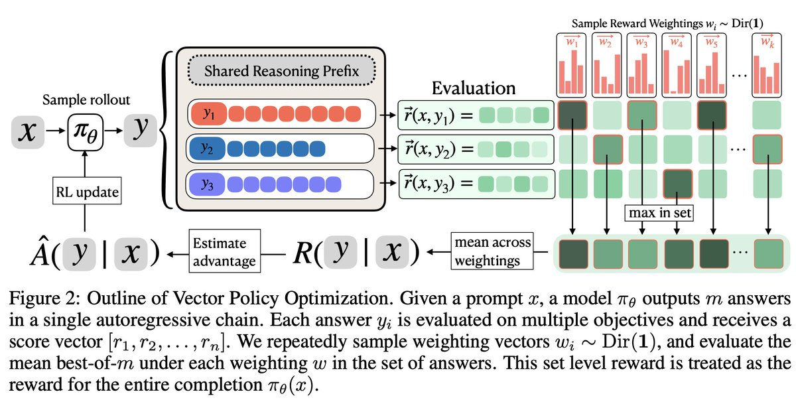
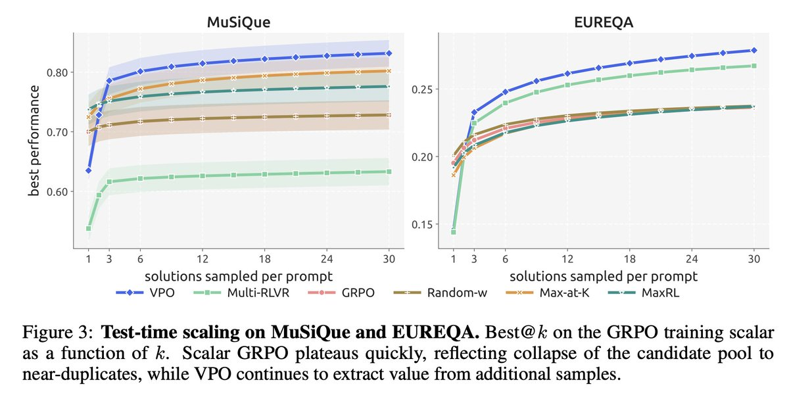
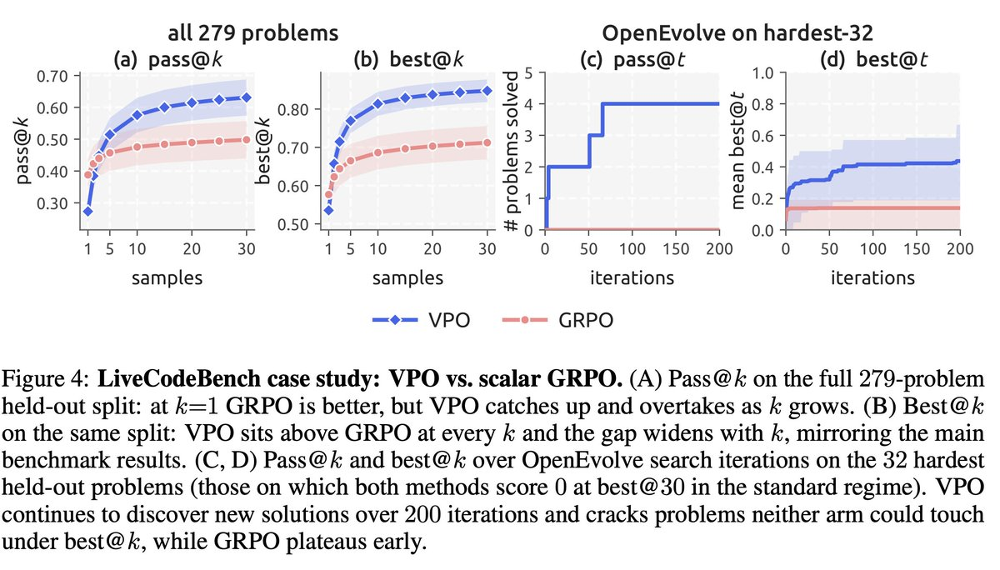

问题不是“奖励标量化错了”，而是部署形态变了
传统 RL 后训练默认模型最终只需要交出一个答案，所以可以先把所有奖励维度压成一个标量： 代码任务里把所有 test cases 变成 pass rate，工具调用里把格式、工具名、参数键、参数值平均， 多跳问答里把证据 hop 和 answer F1 加权合成一个分数。这个设定在 单发回答 场景中是合理的。
但很多新系统不再直接使用模型的一次输出，而是把模型当作候选生成器：先采样多个方案，再用 verifier、unit tests、reward model、best-of-N、pass@k、AlphaEvolve/OpenEvolve 这类搜索程序选择或改写。此时模型分布的角色从“直接给答案”变成“给搜索算法提供可选材料”。
核心矛盾：scalar GRPO 在训练时会把概率质量推向当前标量奖励下最高的一小簇响应，导致候选池越来越像。测试时搜索需要的是一组彼此不同、各自有局部优势的候选；训练却在奖励它们变成同一个答案。
为什么固定最终标量目标下，保留多样性仍可能更好？
论文最值得认真看的地方是 Maze 实验：VPO 训练时采样随机 Dirichlet 权重，但评估时仍然用 GRPO 直接优化的 uniform mean 标量。也就是说，最终目标没有变，变的是训练过程中是否允许模型保留多个奖励方向的解。结果 VPO 在 best@30 上达到 0.593，而 GRPO 固定在 0.432。这个现象说明 VPO 不只是“为未知偏好做 multi-objective policy”，而是在固定目标下也能通过 structured exploration 帮助搜索找到更高分解。
直觉上，某个候选在最终平均分下暂时不是最优，但它可能掌握了“少踩 lava”“多拿 diamond”“先走某条绕路”这类局部策略。scalar RL 早期会压掉这些局部策略；VPO 则让它们在某些随机权重下获得正梯度，保留到后续被模型改良或被搜索利用。
VPO 怎么做：多答案链 + 随机标量化 + 集合级奖励

对 prompt x 和回答 y，奖励不是一个数，而是向量 r(x,y) = [r1, ..., rd]。例如代码生成可以把每个 test case 是否通过作为一个维度；工具调用可以把 format、tool_name、arg_key、arg_value 分开；多跳 QA 可以把每个 supporting paragraph 或 entity exact-match 分开。
VPO 借用 multi-answer chain：同一个 rollout 里按顺序生成 y1, y2, ..., ym。第 i 个答案能看到前面的答案，因此多样性不只来自采样噪声，而可以成为上下文内探索：模型知道前面覆盖了什么，再往别的方向尝试。
每次从 Dir(1) 采样权重 w，均匀覆盖奖励单纯形。一个候选集如果只包含重复答案，只能在很小区域得分高；如果不同候选分别擅长不同维度，就会在更多权重下成为集合最优。
VPO 对每个权重先在集合内取最佳候选，再对权重取平均；这个集合级奖励再进入 GRPO advantage 估计。论文强调它本质上是 GRPO advantage estimator 的替换项，不需要新增 critic 或改变模型结构。
容易误解的点：VPO 的向量奖励不是 token-level dense credit。作者在回复中明确说，模型输出一组 solution，每个 solution 由环境评估得到一个分数向量；VPO 根据这个 reward matrix 计算 objective，然后把 advantage 均匀应用到 trajectory tokens。它解决的是候选集合覆盖问题，不是细粒度 token credit assignment。
到底评估了什么：best@k 是主线，pass@1 不是它的强项
best@k
从同一 prompt 采样 k 个候选，用部署时的 gold scalar w* 给每个候选打分，取最高分。它评估的是“候选池能否让后续选择器找到好答案”。
主指标连续奖励可用
pass@k
常用于代码或 binary success：k 个候选里至少有一个通过就算成功。它评估的是“搜索预算增加时，成功覆盖率是否增加”。
代码任务二值成功
reward-space diversity
计算候选奖励向量之间的平均 pairwise L1 distance。它不看文本表面差异，只看候选在奖励维度上的实际分布。
机制证据非语义多样性
| Domain | 输入与输出 | 向量奖励 | 模型/数据设置 |
|---|---|---|---|
| Maze | 9x9 文本迷宫，输出移动序列。 | completion、gold、diamond、avoid_lava 四维；GRPO 标量是均值。 | Qwen3-4B；100 个 held-out mazes。 |
| MuSiQue | 多跳阅读理解，输出 supporting paragraphs 和 answer。 | 4 个 citation binary indicators + answer F1；answer 权重 3 倍。 | Qwen3-1.7B；300 个 hop-stratified held-out questions。 |
| EUREQA | 5-hop chain reasoning，输出 5 个 masked entities。 | 每个 entity exact match 一维，共 5 维。 | Qwen3-8B；hard_5 held-out split，4 个 eval seeds。 |
| ToolRL | function calling，输出 tool call。 | format、tool_name、arg_key、arg_value 四维。 | Qwen3-1.7B；80 个 test prompts，4 个 eval seeds。 |
| LiveCodeBench | 竞争编程题，输出代码。 | 每个 test case 是否通过是一个维度；gold scalar 是 pass rate。 | Qwen2.5-Coder-7B-Instruct；279 个时间 held-out 题；OpenEvolve 用最难 32 题。 |
对比基线设计得比较干净：GRPO 测试 scalar RL；Multi-RLVR 测试“多答案但固定标量”是否足够；Random-weighting GRPO 测试“随机权重但单答案”是否足够；Max-at-K/MaxRL 测试已有 search-aware scalar objective；Goal-conditioned GRPO 测试显式输入目标权重能否替代集合内探索。
结果：VPO 的优势随搜索预算增长而扩大

| Domain | GRPO best@3 | GRPO best@30 | VPO best@3 | VPO best@30 | 读法 |
|---|---|---|---|---|---|
| MuSiQue | 0.711 | 0.728 | 0.742 | 0.832 | GRPO 基本平台化；VPO 继续从更多候选中获益，F1@30 也从 GRPO 的 0.447 到 VPO 的 0.678。 |
| Maze | 0.432 | 0.432 | 0.512 | 0.593 | 最有力反例：评估仍用 uniform mean，scalar GRPO 直接优化这个目标，但 VPO 仍赢。 |
| EUREQA | 0.212 | 0.236 | 0.213 | 0.279 | 起点接近，但 k 增大后 VPO 拉开差距；Multi-RLVR 在该域也较强，因为它的 reward-space diversity 没完全坍缩。 |
| ToolRL | 0.921 | 0.925 | 0.897 | 0.952 | 任务接近 ceiling，低 k 时 GRPO 更强，但 VPO 在更大搜索预算下追上并超过。 |
消融的含义
Multi-RLVR 说明“让模型一次输出多个答案”本身不够；如果训练目标还是固定标量，梯度仍然把每个位置推向同一个标量最优。Random-weighting GRPO 说明“随机奖励权重”本身也不够；单个输出承载不了集合覆盖。VPO 要把两者组合起来：有集合容量，也有集合级覆盖奖励。
GDPO 对比也很重要。作者回复说 GDPO 是按 reward component 归一化 advantage 后再求和，本质仍是在 RL update 前聚成一个单一 trade-off。论文的 MuSiQue ablation 中，GRPO/GDPO 即使用 3 倍 rollout 和 3 倍 LM compute 也没追上 VPO n=8，说明 VPO 收益不能简单归因于“看了更多 evaluator signal”或“归一化更稳”。

这张图的正确读法：VPO 不是免费提高所有指标。它用 pass@1 换 pass@k/search headroom。没有搜索预算时，scalar RL 的 exploitation bias 是优点；有搜索预算时，它变成候选池坍缩的缺点。
讨论区里最有价值的澄清
“向量奖励从哪里来？”
作者回复 Shuo Chen：多数时候奖励本来就是向量，只是为了 GRPO 才被聚合成标量。代码不是只能看 passed/failed；每个 test case 都可以是一维 binary reward。
“VPO 是多目标优化吗？”
是，但不是经典意义上“部署时让用户输入偏好权重”的 multi-objective policy。论文强调，即使部署目标 w* 已知，保留覆盖 Pareto front 的候选集也可能改善 w* 下的 search outcome。
“与 rewarded soups 有什么关系？”
作者说 VPO 可以理解为把 rewarded soup policies internalize 到同一个模型里。换句话说，不是训练多个 reward-specific policies 再混合，而是让单个模型在一次候选集合里表达多个 trade-off。
“代码是否公开？”
作者在多个回复中说 code、official implementation 和 website 会很快发布；截至本文核验时，未找到已公开官方仓库，因此复现边界需要标注为“论文描述可读，代码尚未核验”。
边界：VPO 什么时候不该赢
最重要限制：VPO 依赖奖励维度真的代表不同方向。如果所有 nominal reward components 高度共线，所谓“向量奖励”只是一个标量换皮，随机权重不会创造有意义的 Pareto frontier。
论文用 UltraFeedback + ArmoRM-5 做 sanity check：五个 reward model 维度在 on-policy 分布上接近共线，VPO 在 absolute best@k 上低于 GRPO；Table 9 中 UltraFeedback 的 best@16 为 VPO 0.767、GRPO 0.772，差值 -0.004。这个失败例子反而让论文更可信，因为它说明 VPO 有明确适用条件，而不是声称万能提升。
| 限制 | 为什么重要 | 实际使用时怎么检查 |
|---|---|---|
| 单发 pass@1 可能下降 | VPO 训练模型探索多个方向，不是把单次输出压到最高概率最优解。 | 如果产品只能调用一次模型且没有 verifier/search，不应默认用 VPO。 |
| 向量奖励可能是伪向量 | 奖励维度共线时，覆盖 reward simplex 没有意义。 | 记录 on-policy reward vectors，计算维度相关性、pairwise L1、Pareto non-dominance 比例。 |
| compute 对齐复杂 | VPO 一次 rollout 输出 m 个候选，长度和 evaluator calls 与单答案方法不同。 | 同时报告 token budget、rollout count、evaluator calls、wall-clock、best@k under fixed inference budget。 |
| trajectory-level credit 仍粗 | VPO 没有解决 token 级归因，失败候选中的局部好步骤仍可能被整体 advantage 稀释。 | 可与 process reward、step verifier、test-case-to-code-span attribution 结合，但这是下一步，不是论文已解决内容。 |
我的判断：VPO 把“模型后训练”的目标函数对齐到了 agent/search 系统现实
这篇工作的真正价值，不在于“向量奖励”这个数学对象本身。多目标 RL、Pareto frontier、reward randomization 都不是新概念。它的新意在于把这些概念放回 LLM agent 的真实部署形态：模型输出越来越少是终局答案，越来越多是搜索、验证、改写、执行循环里的候选材料。
如果后续系统会做搜索，那么训练阶段追求单点最优反而是错配。VPO 的核心工程洞察是：训练不必同时承担探索和利用；训练负责保持一组高质量、有互补性的候选分布，测试时搜索负责选择和利用。 这与 AlphaEvolve、OpenEvolve、coding agent、tool-use agent 的方向高度一致。
它也提示了一个更通用的 post-training 设计原则：不要在数据管线早期过度压缩监督信号。很多任务天然产生结构化反馈：测试用例、子目标、步骤、工具字段、用户偏好维度、风险维度。把它们压成一个 scalar 可以让 PPO/GRPO 更方便，但也会丢掉搜索系统最需要的可分解结构。
落地建议：如果你在训练 coding/reasoning/tool-use agent，且部署时有 verifier 或 search budget，应该优先保留 per-test/per-hop/per-field reward logs，而不是只保存最终 pass/fail。即使暂时不用 VPO，这些向量奖励也是后续做 search-aware training、diagnostics、credit assignment 的核心资产。
下一步值得问的问题
- VPO 与 dense process reward 是否互补？一个负责 reward-space coverage，一个负责 step/token-level credit，组合后可能比任一单独方法更强。
- m=3 是否只是工程折中？更大的 candidate chain 会不会让上下文内探索更强，还是会因为长度和干扰导致收益递减？
- Dirichlet(1) 是否适合所有任务？实际产品偏好通常不是均匀覆盖 simplex，而是有风险约束和硬 veto。
- 在 multi-agent 或 long-horizon tool-use 环境中，向量维度该按子目标、工具字段、时间阶段还是外部 evaluator 拆分？拆得太粗会损失结构，拆得太细可能增加噪声。
- 能否用训练早期的 reward collinearity 诊断自动判断是否启用 VPO？论文 Appendix F 已经给了一个很实用的方向。
最终判断：VPO 不是对 GRPO 的小修小补，而是把 RL 后训练目标从“最大化一个答案的标量分数”改成“最大化一个候选集合对未来搜索的可用性”。它牺牲的是单次回答的贪心性，换来的是搜索预算增长时的边际收益。只要 LLM 继续被嵌入 verifier、unit test、evolutionary search 和 agent execution loop，这个方向就值得持续跟踪。
术语解释与概念边界
- VPO
- 这里指围绕输出多样性和偏好优化的训练思路，目标是让模型在测试时提供更有价值的候选集合。
- Test-time search
- 推理时采样多个候选，再用 verifier、reward 或规则筛选。它依赖候选之间真的有差异。
- 多样性训练
- 不是让输出随机变花，而是让候选覆盖不同解题路线，从而提高搜索找到正确路线的概率。
- Mode collapse
- 模型总是生成同一类答案。发生 collapse 时，采样更多次也不会明显提升成功率。
证据边界与资料索引
X 线程
原帖、主线程、作者回复和讨论区上下文共同说明：传统 RL 后训练把所有奖励预先压缩为单一标量，可能破坏 test-time scaling；VPO 用向量奖励和集合级目标改善测试时搜索。
论文原文
线程短链指向 https://arxiv.org/abs/2605.22817。论文题名为 Vector Policy Optimization: Training for Diversity Improves Test-Time Search，作者 9 人，24 页，arXiv v1 提交日期 2026-05-21。
媒体证据
线程中 4 张图片已保存并嵌入本报告，分别覆盖论文首页概览、VPO 方法图、MuSiQue/EUREQA test-time scaling、LiveCodeBench/OpenEvolve case study。
讨论区信号
作者在回复中澄清了几个容易误读的点：VPO 与 GDPO 不同；向量奖励通常已经存在，只是被 GRPO 聚合；VPO 不是 token-level dense credit assignment，优势仍按 trajectory tokens 广播；代码会发布但当时尚未公开。